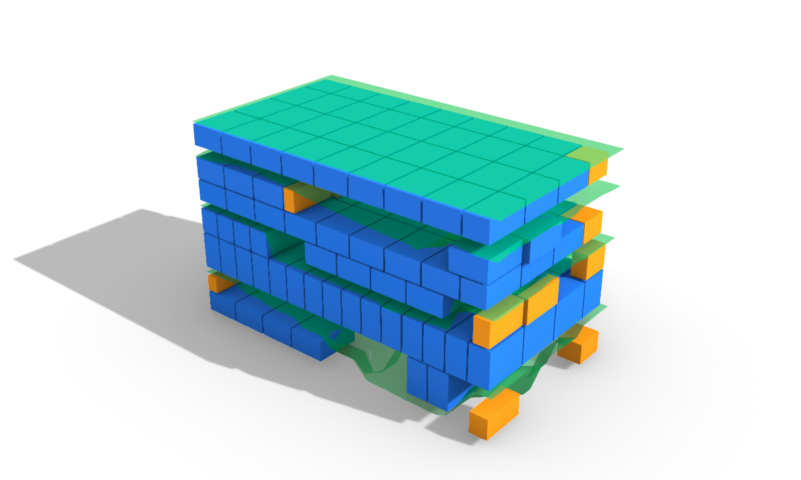

Research-grade by construction.
Every kept algorithm is a measured delta over a named, shipping baseline — benchmarked on the same instances, citation-tagged on the component, and validated live in Rhino. This page is the source-cited research summary; every number names the file it came from.

01
Frahan StonePack is a Rhino 8 / Grasshopper plugin for stone-fabrication readiness — the bridge layer between design intent and machine-ready fabrication for dimension stone, monuments, and dry-stone masonry. It covers one pipeline: GPR / scan to fracture mapping and point-cloud discontinuity extraction, then 3D reconstruction, discrete fracture network (DFN), block packing and cutting, masonry equilibrium, and fabrication export.
Every kept algorithm clears four bars: a measured benchmark over a shipping baseline (truth criterion = live visual validation, not a self-reported number); an SLM math derivation with named citations and an [Algorithm] attribute on the component; a PRISMA statistics review scoped to head-to-head benchmarks; and a ROSES interdisciplinary synthesis (recenter before computing, scale-relative epsilon, robust boolean kernel). Originality is classified, not asserted: clean-room (59), facade-over-primitives (20), evolved-fork (9), original-research (8), wrapper-of-native (5), vendored-library (5), direct-port (3). The default install ships no native DLL and links no GPL/AGPL/non-commercial code; the learned Kintsugi module is quarantined out of it.
02
Headline machine-measured results. Ratios are not cross-comparable across domains: guillotine yield, mesh-honest container fill, and recovery percentages measure different quantities.
| Area | Headline measured result | Source |
|---|---|---|
| 2D nesting | 53.9% mean wasted-area cut vs V506 baseline, at 0 overlap | 01_two-d-nesting.md |
| 2D nesting | Only 0-overlap packer over 80% utilisation with holes (82.0 / 84.7 / 89.6%) | PACK2D_STUDY_REPORT §0a |
| Hole-aware NFP | HoleNest 12/12 placed, 4 holes filled, valid + deterministic; Sparrow invalid on same input | HOLE_PACKER_MATH §2a |
| 3D packing | DLBF best-of-orientation 70.4% fill vs 66.4% baseline | PACK3D_STUDY_REPORT §3 |
| 3D packing | Compactness 17.0% → 33.2%, 19/30 → 30/30 stones | 02_three-d-packing.md |
| BlockCutOpt | Mode 5 guillotine 49.3% yield at 100% saw-separable | docs/results/RESULTS.md |
| Recovery cascade | +21% recovery over single-scale BlockCutOpt | docs/results/RESULTS.md |
| Quarry georeference | Oblique bed-following +59% / +$11,287 net per ~50 m³ bench | 03_quarry-blockcut.md |
| Discontinuity worker | k=24 normals ~10.2 s, ~1.4× faster than Open3D KD-tree (14.8 s) | discontinuity_worker/README |
| Discontinuity | Tongjiang 7.86M pts → 4 joint sets, Jv 7.20, Vb 0.352 m³ | VALIDATION_REPORT.md |
| GPR fracture | Grimsel granite: 1472 / 1485 picks (AU / VE) | 03_gpr_fracture_granite |
| Masonry CRA | 5/5 parity vs compas_cra incl. H-model rejection | CRA_COMPAS_PARITY.md |
| Masonry Λ | Hungarian 0.18–0.23 vs greedy/random 0.59–0.64 (~2.9×), datum 0.27 | LAMBDA_STUDY.md |
| Edge-matching | Overlap 12–25% → 0%, 8/8 placed, 100% coverage | 08_edge-matching.md |
| Kintsugi | Verifier pair score 0.7068 STRONG, 2/2 placed | 14_kintsugi/README.md |
| Surface packing | 130° twist, 6 regions, 176-shard mosaic, live-validated | 07_surface-packing.md |
| Reconstruction | 59,971 v / 111,973 t in 3.9 s, out-of-process | 12_ingestion.md |
| Test battery | 1034 PASS / 0 FAIL / 147 SKIP (2026-06-14) | RESULTS.md |
03
(a) 2D nesting and hole-aware NFP
Place irregular 2D parts into a sheet that may carry defect holes, with zero overlap, and nest small parts inside the holes of larger placed parts to cut saw-able stock around defects. The feasible set is the sheet inner-fit polygon minus the union of NFPs against placed parts and holes; placement is the bottom-left vertex of that exact region — 0-overlap by construction and deterministic.
Bennell & Oliveira 2009 (JORS, NFP/IFP); Burke et al. 2006/2007 (BLF); Clipper2 (Johnson, BSL-1.0); Lloyd 1982 + Kuhn 1955 (Trencadís Voronoi + Hungarian).
- Evolved NFP-BLF cuts mean wasted area 53.9% vs the V506 overlap-then-trim baseline, at zero overlap.
- Only 0-overlap packer in the study to cross 80% utilisation with holes: 82.0% / 84.7% / 89.6%.
- HoleNest places 12/12 and fills 4 part-holes, valid + deterministic, where the Sparrow / OpenNest reference is structurally invalid on the same input; wins the rect fast-path (5.2 ms vs 71 ms).
(b) 3D block packing
Pack 3D items into containers under varying constraints: heightmap stacking, saw-cuttable guillotine cuts, revenue-weighted mixed sizing, or physical settling into a stable non-interpenetrating pile.
Kim 2025 (guillotine forest); Jalalian et al. 2023 (cut-surface cost); Chehrazad/Roose/Wauters 2025 (DLBF); Bullet sequential-impulse + CoACD (Wei et al. 2022); Heyman 1966 (CoM-over-support).
- DLBF best-of-orientation reaches 70.4% volumetric fill vs 66.4% baseline, 28 vs 27 pieces, 0 overlap.
- Heightmap-to-settle moved compactness 17.0% → 33.2%, 19/30 → 30/30 stones; 80% → 100% COM-stable with the stability-seat pass.
- Statue-to-blocks decomposition recovers a volume ratio of exactly 1.0000 over 173 CGAL booleans, zero failures.
(c) BlockCutOpt, recovery cascade, wire-saw guillotine
Maximise count and value of marketable fixed-size blocks cuttable from a fractured quarry bench by optimising the cutting-lattice pose to avoid fractures, then recovering value from fracture-crossed blocks at finer scales, rendered as a fabricable straight-saw guillotine plan.
Elkarmoty et al. 2020 (clean-room, extended yaw-only → full-3D tilt); Akenine-Möller 2001 (SAT); Yarahmadi 2018, Cherri 2009, Gilmore & Gomory 1965 (recovery); Graham 1969 (LPT scheduling).
- Mode 5 staged wire-saw guillotine recovery: 49.3% yield at 100% saw-separable, vs mode 4 voxel-DLBF 53.3% but not saw-cuttable.
- RecoveryCascade recovers +21% over single-scale BlockCutOpt by re-cutting cracked blocks at finer scales.
- Real Botticino marble bench: 280 GPR picks → 3 dipping beds; oblique bed-following plan recovers +11.90 m³ (+59%) / +$11,287 per ~50 m³ bench.
(d) Point-cloud discontinuity, joint sets, DFN
Turn a raw UAV/TLS cloud of a rock face into planar facets, cluster their poles into joint sets, and report normal spacing and block size so a quarry can orient cuts away from dominant sets.
Pauly 2002 (surface variation); Dewez/Girardeau-Montaut 2016 (qFacets); Riquelme et al. 2014/2015 (DSE); Hoetzlein 2014 (cell lists); Priest 1993 + Baecher/Veneziano (DFN). No CloudCompare/CCCoreLib GPL source read.
- k=24 PCA normals on the 7,858,334-point Tongjiang cloud: ~10.2 s, ~1.4× faster than Open3D's KD-tree; whole pipeline ~14.7 s. (Earlier "215×/265× vs CloudCompare" framing retracted — different neighbourhood scale.)
- Live: 4 joint sets (dip 19/79/72/84, spacing 0.25/0.23/0.67/1.11 m), Jv 7.20, RQD 92, Vb 0.352 m³, Deq 0.71 m.
(e) GPR fracture mapping
Turn a raw GPR B-scan into a fracture and cavity map, then into a quantified, uncertainty-bounded keep-out volume of intact rock, in dependency-light managed code.
Cooley-Tukey 1965 (FFT) + Bluestein fallback; Taner/Koehler/Sheriff 1979 (Hilbert energy); Stolt 1978 (f-k migration); USGS Mirror Lake continuity; Kazhdan & Hoppe 2013 (Poisson); Cressie 1993 / Rasmussen & Williams 2006 (kriging).
- Granite spine, real Grimsel ISC data (MALA GX160, CC-BY-4.0): granite_160 preset extracts 1472 picks (AU) / 1485 (VE).
- Loviisa surface fractures (real ESRI Shapefile): reader returns 708 traces / 6483 vertices / 1593.5 m in EPSG:3067, two conjugate sets near 15° and 105–120°.
(f) Masonry CRA equilibrium and Λ / J metrics
Decide whether a dry masonry assembly stands under self-weight, and measure how much an inventory of found stones must be carved to fit a target wall. RBE is the permissive force-only check; CRA couples statics with virtual kinematics and rejects self-stressed states RBE accepts (the H-model).
Kao et al. 2022 (CAD 146:103216, clean-room; MIT compas_cra as structural model); Clifford & McGee 2018 (interlock J); Frézier 1737 / Monge 1798 / Heyman 1966 / Rippmann & Block 2011 (stereotomy).
- CRA vs compas_cra parity: 5/5 on exact ports incl. the H-model where RBE accepts and CRA correctly rejects. No "faster than" claim — their RBE beats ours on the arch (102–123 ms vs 159 ms).
- Λ on 60 real ETH1100 stones: Hungarian shape-aware matcher lands 0.18–0.23 vs greedy/random 0.59–0.64 (~2.9×); flagship single-instance Λ = 0.194, beating the Cyclopean datum of 0.27.
- Voussoir coverage: arch 11/11 trims, 94.9%; pendentive vault 36/36 trims, 98.3%.
(g) Edge-matching
Fracture reassembly: recover the rigid motion that brings every mating boundary of broken pieces back into contact without interpenetration.
Arkin et al. 1991 (turning-angle); Besl & McKay 1992 (ICP); Kabsch 1976 + Umeyama 1991 (Procrustes); Myronenko & Song 2010 (CPD soft-ICP); Horn 1987 (absolute orientation).
- R1 partial matching + R2 global non-overlap drove measured 2D overlap from 12–25% to 0%, 8/8 placed, 100% coverage.
- Projection bootstrap on a 6-shard fixture: 67 cross-panel 2D matches where the prior path had 0; placed 6/6 via agglomerative spanning tree (honest caveat: 2 of 5 interfaces in full contact).
(h) Kintsugi learned 6-DoF reassembly
Recover each fragment's rigid 6-DoF pose so broken fragments snap back into the original solid, including the smooth fracture surfaces where the geometric matcher finds no rim correspondences.
Wang/Chen/Furukawa 2025 (PuzzleFusion++, ICLR; arXiv:2406.00259); Qi et al. 2017 (PointNet++); van den Oord 2017 (VQ-VAE); Ho/Jain/Abbeel 2020 (DDPM); Vaswani 2017 + Peebles & Xie 2023 (DiT). Trained on Breaking Bad (Sellan et al. 2022).
- Example 14 live HITL: two Breaking Bad fragments reassembled at verifier pair score 0.7068 (STRONG, above the 0.5 gate), zero unplaced, 20 diffusion steps.
- The geometric-only path places only 1 of 6 fragments on a smooth Voronoi sphere shatter — which motivates the learned path. Pure-C# denoiser drifts ~3–5% from libtorch.
- License-critical: port + weights (~255 MB) are non-commercial research-only, quarantined and absent from the default install.
(i) Surface packing and BFF
Flatten a curved 3D stone surface to a planar chart, pack 2D parts into the chart, and lift them back onto the surface so a flat-cut tile field follows the surface and butts edge-to-edge in 3D. Load-bearing invariant: flat face i corresponds exactly to surface face i.
Sawhney & Crane 2017 (BFF, ACM TOG 36(4):109, shipped as external static exe); Floater 2003 (MVC, cited as background — no MVC code present).
- Example 13 live-validated: a twisted monument (130° over its height) split into 6 regions, then a 176-shard Trencadís mosaic mapped onto the curved surface through the BFF chart + barycentric inverse map.
- The static BFF build folds 17 third-party DLLs into one 38 MB self-contained exe, byte-identical to upstream.
(j) Mesh and reconstruction
Turn raw scan clouds and dirty meshes into clean, watertight, boolean-ready geometry, and do the heavy native geometry without crashing Rhino.
Botsch et al. 2010 (PMP); Lindstrom & Turk 1998 (decimation); Shapira et al. 2008 (SDF segmentation); Edelsbrunner & Mücke 1994 / Kazhdan & Hoppe 2013 / Cohen-Steiner & Da (reconstruction); Geogram (BSD-3) + CGAL vendored; MeshCsg = csg.js port (MIT).
- Advancing-front reconstruction out-of-process: 59,971 verts / 111,973 tris in 3.9 s.
- Statue-to-blocks recovered-volume identity ρ = 1.0000.
04
Full provenance, DOIs and licences in data/ATTRIBUTION.md. Code is GPL-3.0; datasets carry their own upstream licences. Total bundle ~6.3 GB.
| Dataset | Source / DOI | Licence | Used by |
|---|---|---|---|
| ETH1100 dry-stone (1100 meshes + labels) | Zenodo 10038881 (ETH Zürich) | CC-BY-4.0 | 2D/3D packing, masonry Λ |
| Tongjiang limestone quarry UAV clouds | Zenodo 15614501 | CC-BY-4.0 | discontinuity, reconstruction |
| Granite Dells TLS rock-face | OpenTopography OT.122010.26912.1 | attribution | scan ingest, discontinuity |
| Grimsel ISC GPR (MALA GX160, granite) | DOI 10.3929/ethz-b-000420930 | CC-BY-4.0 | granite GPR fracture |
| Bonduà Botticino marble GPR grids | DOI 10.17632/w26n6nftxs.3 | CC-BY-4.0 | marble GPR, block-cut |
| TU1208 IFSTTAR multi-rock GPR | Zenodo 1211173 | CC-BY | GPR reader validation |
| Loviisa rapakivi-granite fracture traces | Zenodo 7077494 (Chudasama 2022) | CC-BY-4.0 | surface fracture example |
| Breaking Bad | Sellan et al. 2022 | dataset terms | Kintsugi parity |
05
Cite: use CITATION.cff (Libish Murugesan, ORCID 0009-0004-3238-4202; GPL-3.0-only; v0.1.0-alpha; a Zenodo DOI is minted for this release). The companion paper is submitted to the Bulletin of Engineering Geology and the Environment.
Reproduce: build dotnet build src/Frahan.StonePack.GH -c Release (net48); test tests/Frahan.StonePack.Tests (1034 PASS / 0 FAIL / 147 SKIP, clean clone, headless); benchmarks via tools/Frahan.StonePack.Harness --pack2dstudy. Truth criterion is visual validation in Rhino/Grasshopper; examples under examples/ are live-built at correct physical scale and reproduce on cold reopen.